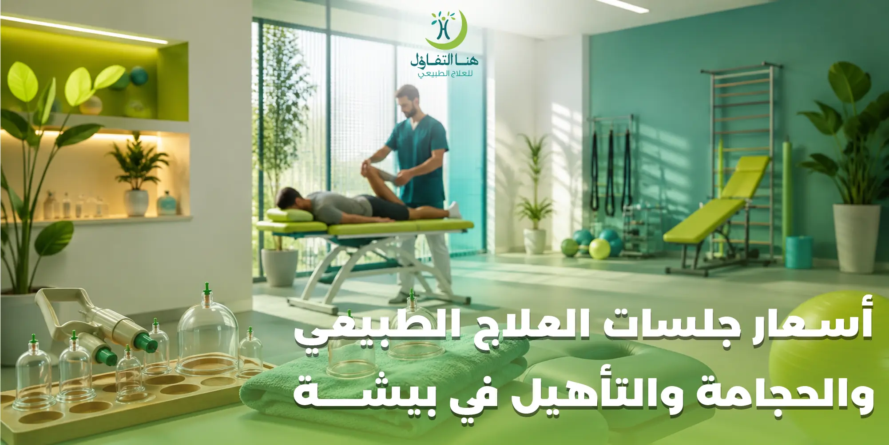

يبحث الكثير من سكان بيشة عن أسعار جلسات العلاج الطبيعي والحجامة والتأهيل في بيشة قبل اختيار المركز المناسب، خصوصًا عندما تكون الخدمة المطلوبة عبارة عن برنامج علاجي أو تأهيلي يحتاج إلى أكثر من جلسة. وتزداد أهمية معرفة التكلفة عندما تتوفر خيارات متعددة تشمل الجلسات الفردية والباقات العلاجية وتأهيل الأطفال والكبار وخدمات الحجامة.
ويقدم هنا التفاؤل في بيشة مجموعة من الخدمات التي تلبي احتياجات مختلفة، مع وجود خيارات متعددة في الجلسات والباقات. وهذا يساعد المراجع على تكوين تصور مبدئي عن التكلفة قبل حجز الموعد والتعرف على الخدمة الأنسب لحالته.
ولا ينبغي النظر إلى السعر باعتباره العامل الوحيد عند اختيار جلسات العلاج الطبيعي أو التأهيل، لأن طبيعة الحالة واحتياج المراجع وعدد الجلسات المناسبة من الأمور التي يجب تقييمها قبل بدء البرنامج. لذلك يجمع هذا المقال بين أسعار الخدمات، والتعريف بالخيارات العلاجية والتأهيلية، والفئات التي قد تستفيد منها، والعوامل التي تؤثر في اختيار البرنامج.
أسعار خدمات العلاج الطبيعي والحجامة والتأهيل في هنا التفاؤل
في البداية، نستعرض الأسعار الموجودة في قائمة الخدمات المرفقة حتى تكون الصورة واضحة أمام الباحث عن تكلفة العلاج الطبيعي والتأهيل والحجامة في بيشة.
الجلسة العلاجية
فرديةباقة 6 جلسات
باقةباقة 12 جلسة (كبار)
تأهيلباقة 12 جلسة (أطفال)
تأهيلحجامة 12 كأسًا
حجامةحجامة 6 كاسات
حجامةالكأس الواحد
حجامةالاستشارة
مجانيةالأسعار المذكورة في هذا المقال وفق قائمة الأسعار المرفقة، ولذلك يُفضل التأكد من استمرار الأسعار والعروض عند التواصل مع المركز وحجز الخدمة.
العلاج الطبيعي في بيشة لخدمات التأهيل وتحسين الحركة
العلاج الطبيعي من الخدمات التي ترتبط بشكل مباشر بالحركة والوظائف البدنية، ولذلك تختلف احتياجات الأشخاص الذين يبحثون عن جلسات العلاج الطبيعي بصورة كبيرة.
فقد يحتاج شخص إلى جلسات بعد إصابة، بينما قد يبحث شخص آخر عن التأهيل بعد إجراء طبي أو جراحي، وقد يحتاج آخر إلى برنامج يساعده على تحسين الحركة والقدرة الوظيفية.
لهذا السبب لا يعتمد العلاج الطبيعي على نموذج واحد ثابت، وإنما تبدأ الاستفادة من الخدمة بالتعرف على الحالة وتحديد أهداف البرنامج المناسب.
ويتيح هنا التفاؤل خيارات تبدأ من الجلسة العلاجية الفردية وتصل إلى الباقات التي تضم عددًا أكبر من الجلسات، مما يوفر للمراجع مساحة لاختيار الخيار الذي يتناسب مع احتياجه بعد معرفة توصية المختص.
جلسة العلاج الطبيعي الفردية في هنا التفاؤل
الجلسة الفردية تمثل الخيار المباشر لمن يبحث عن سعر جلسة العلاج الطبيعي في بيشة دون الاشتراك في باقة متعددة الجلسات.
وقد يكون هذا الخيار مناسبًا في حالات مختلفة، مثل الشخص الذي يرغب في الحصول على جلسة واحدة، أو المراجع الذي يريد بدء المتابعة والتعرف على البرنامج المقترح له قبل اختيار باقة.
لكن من المهم ألا يتم اختيار عدد الجلسات بناءً على السعر فقط، لأن احتياجات العلاج الطبيعي تختلف حسب الحالة.
فعدد الجلسات المناسب لا يكون واحدًا لجميع الأشخاص، كما أن الهدف من البرنامج قد يختلف من مراجع إلى آخر.
الباقات العلاجية في العلاج الطبيعي
عندما يحتاج المراجع إلى متابعة مستمرة، تصبح الباقات متعددة الجلسات من الخيارات التي تستحق المقارنة.
وتوفر هنا التفاؤل باقة مكونة من 6 جلسات، إلى جانب باقات التأهيل المخصصة لفئات مختلفة.
وتتميز الباقة بأنها توفر عددًا من الجلسات ضمن خيار واحد، وهو ما قد يكون عمليًا للمراجع الذي يحتاج إلى متابعة متكررة بدل الاعتماد على حجز جلسة منفردة في كل مرة.
لكن الاختيار الصحيح يظل مرتبطًا بالخطة العلاجية، فليس الهدف الحصول على أكبر عدد ممكن من الجلسات، وإنما الحصول على البرنامج الذي يتناسب مع احتياج الحالة.
متى يحتاج الشخص إلى برنامج علاج طبيعي وليس جلسة واحدة؟
هناك حالات يكون فيها الهدف من المتابعة مرتبطًا بمراحل متعددة، ولذلك قد لا تكون جلسة واحدة كافية لتحقيق الهدف المطلوب.
- مشكلة تؤثر على الحركة.
- إصابة سابقة.
- ضعف في بعض الوظائف الحركية.
- مرحلة تأهيل بعد إجراء طبي.
- الحاجة إلى استعادة مستوى أفضل من النشاط.
- برنامج تأهيلي يحتاج إلى متابعة تدريجية.
وهنا تظهر أهمية التقييم، لأن البرنامج الجيد لا يعتمد فقط على عدد الجلسات، وإنما على تحديد الهدف من العلاج ومتابعة التطور خلال فترة البرنامج.
التأهيل للكبار في بيشة
التأهيل للكبار من الخدمات التي قد يحتاج إليها الأشخاص الذين يواجهون تحديات مرتبطة بالحركة أو الوظائف البدنية.
وقد يكون الهدف من البرنامج تحسين القدرة على أداء بعض الأنشطة، أو دعم استعادة الحركة، أو المتابعة ضمن مرحلة تأهيلية محددة.
وتختلف طبيعة التأهيل حسب الحالة، ولذلك لا يمكن اعتبار جميع برامج التأهيل متشابهة.
- تحسين الحركة.
- دعم القدرة الوظيفية.
- المتابعة بعد الإصابة.
- التأهيل بعد الإجراءات الطبية.
- التدريب على بعض الأنشطة الحركية.
- متابعة التطور خلال مراحل البرنامج.
ويقدم هنا التفاؤل باقة مخصصة لتأهيل الكبار، مما يوفر خيارًا مناسبًا للأشخاص الذين يحتاجون إلى عدد من الجلسات ضمن برنامج تأهيلي.
تأهيل الأطفال في بيشة
يختلف تأهيل الأطفال عن برامج التأهيل للكبار، لأن الطفل يحتاج إلى مراعاة عمره وقدراته ومستوى الحركة واحتياجاته الخاصة.
ولهذا فإن اختيار برنامج التأهيل لا يعتمد على عدد الجلسات فقط، وإنما على تقييم حالة الطفل وتحديد الأهداف التي يسعى البرنامج إلى دعمها.
وتوفر قائمة هنا التفاؤل باقة مخصصة للأطفال، وهو ما يتيح للأسر خيارًا واضحًا ضمن خدمات التأهيل.
ويظل التواصل مع المختص خطوة مهمة قبل بدء البرنامج، لأن كل طفل له احتياجات مختلفة، وقد يختلف البرنامج من طفل إلى آخر حتى عندما تكون المشكلة العامة متشابهة.
أهمية التقييم قبل بدء جلسات التأهيل
من الأخطاء الشائعة التعامل مع برامج التأهيل على أنها خدمة واحدة تصلح للجميع.
في الواقع، تختلف الحالات من حيث:
- العمر.
- القدرة على الحركة.
- طبيعة المشكلة.
- مدة وجود المشكلة.
- مستوى النشاط.
- الهدف من التأهيل.
- الاستجابة للبرنامج.
لذلك يساعد التقييم على وضع صورة أوضح عن الاحتياج الفعلي للمراجع.
كما يساعد المراجع على فهم الفرق بين الجلسة الفردية والبرنامج متعدد الجلسات، واختيار الخيار الأنسب بناءً على احتياجه وليس على السعر وحده.
الحجامة في بيشة ضمن الخدمات المتاحة في هنا التفاؤل
إلى جانب العلاج الطبيعي والتأهيل، تتضمن قائمة الخدمات الحجامة بعدة خيارات سعرية تعتمد على عدد الكؤوس.
وهذا يوفر للمراجع أكثر من خيار عند البحث عن أسعار الحجامة في بيشة.
وتختلف تكلفة الخدمة حسب العدد المحدد في قائمة الأسعار، ولذلك يستطيع العميل معرفة التكلفة قبل الحجز بدل الدخول إلى الموعد دون معرفة السعر.
ومن المهم عند حجز أي خدمة حجامة التأكد من تفاصيل الخدمة المقدمة، وما يتضمنه الموعد، والالتزام بالتعليمات الصحية المناسبة.
الحجامة بعدد كؤوس مختلف
توفر قائمة هنا التفاؤل خيارات متعددة للحجامة، وهو ما يجعل تكلفة الخدمة مختلفة بحسب عدد الكؤوس.
وجود هذه الخيارات يفيد الأشخاص الذين يبحثون عن:
- حجامة بعدد 6 كاسات
- حجامة بعدد 12 كأسًا
- سعر الكأس الواحد
وهذا التنوع يجعل السعر أكثر وضوحًا للمراجع قبل الحجز.
ويُفضل دائمًا الحصول على تفاصيل الخدمة من المركز قبل الموعد، خصوصًا إذا كانت هناك متطلبات أو تعليمات خاصة قبل الجلسة.
الاستشارة المجانية في هنا التفاؤل
من النقاط الموجودة في قائمة الأسعار أن الاستشارة مجانية.
وتعتبر الاستشارة فرصة للمراجع للتعرف على الخدمة المناسبة قبل اتخاذ قرار يتعلق بالجلسات أو الباقات.
وهذا مهم بشكل خاص للأشخاص الذين لا يعرفون:
- هل يحتاجون إلى جلسة منفردة؟
- هل يحتاجون إلى باقة؟
- هل الخدمة المناسبة علاج طبيعي أم تأهيل؟
- ما عدد الجلسات المتوقع؟
- ما البرنامج الذي يتناسب مع حالتهم؟
وبدل اتخاذ القرار اعتمادًا على السعر فقط، يمكن الاستفادة من الاستشارة لمعرفة الاحتياج بصورة أوضح.
كيف تختلف تكلفة الجلسة عن تكلفة البرنامج الكامل؟
عند البحث عن أسعار العلاج الطبيعي، يركز البعض على سعر الجلسة الواحدة، لكن تكلفة البرنامج الكامل قد تكون أكثر أهمية بالنسبة للشخص الذي يحتاج إلى متابعة.
فالجلسة الواحدة تمثل خدمة منفردة، بينما الباقة تضم عددًا محددًا من الجلسات.
ولهذا فإن المقارنة الصحيحة تحتاج إلى النظر إلى:
- عدد الجلسات.
- نوع البرنامج.
- مدة المتابعة.
- طبيعة الخدمة.
- احتياج الحالة.
وبذلك يستطيع المراجع اتخاذ قرار أكثر وعيًا بدل اختيار الخدمة بناءً على أقل سعر فقط.
اختيار مركز العلاج الطبيعي في بيشة
السعر عنصر مهم، لكنه ليس العنصر الوحيد الذي يجب النظر إليه عند اختيار مركز للعلاج الطبيعي أو التأهيل.
وهذه المقارنة تساعد على اتخاذ قرار أفضل من مجرد البحث عن أقل سعر.
برامج العلاج الطبيعي تختلف من شخص إلى آخر
من المهم التأكيد على أن التشابه في الأعراض لا يعني بالضرورة تشابه البرنامج.
شخصان قد يعانيان من مشكلة مرتبطة بالحركة، لكن أحدهما قد يحتاج إلى برنامج مختلف عن الآخر بسبب العمر أو مستوى الحركة أو مدة المشكلة أو عوامل أخرى.
لهذا فإن الجلسات لا ينبغي أن تكون مبنية على تجربة شخص آخر بشكل مباشر.
والتقييم المتخصص يساعد في تحديد الأهداف المناسبة للبرنامج ومتابعة مدى الاستفادة منه.
العلاج الطبيعي بعد الإصابات
تعد الإصابات من الحالات التي قد تحتاج إلى مرحلة تأهيلية، خصوصًا عندما تؤثر الإصابة في الحركة أو النشاط المعتاد.
وقد يحتاج المراجع إلى متابعة منظمة بدل العودة المباشرة إلى النشاط السابق.
وتختلف طبيعة البرنامج بحسب نوع الإصابة ومدى تأثيرها، ولذلك يحدد المختص احتياجات المتابعة بناءً على حالة المراجع.
وهنا يمكن أن يكون العلاج الطبيعي والتأهيل جزءًا من رحلة استعادة الوظيفة الحركية بصورة تدريجية.
العلاج الطبيعي والتأهيل بعد الإجراءات الطبية
قد تحتاج بعض الحالات إلى تأهيل بعد إجراءات طبية أو جراحية، ويكون الهدف هو دعم العودة التدريجية إلى النشاط وفق ما تسمح به الحالة.
ويختلف البرنامج بحسب الإجراء والحالة الصحية والتوجيهات الطبية.
لذلك من المهم عدم البدء بأي برنامج تأهيلي بعد إجراء طبي دون معرفة مدى ملاءمته للحالة، والاعتماد على تقييم المختص والتوجيهات الطبية ذات الصلة.
تأهيل كبار السن في بيشة
قد تكون الحركة اليومية أكثر تحديًا لدى بعض كبار السن، خصوصًا مع وجود مشكلات تؤثر في النشاط أو القدرة الوظيفية.
وتختلف احتياجات كبار السن من شخص إلى آخر، ولذلك قد يتضمن البرنامج أهدافًا مرتبطة بالحركة والقدرة على أداء الأنشطة اليومية.
كما يجب مراعاة مستوى القدرة البدنية والعمر وطبيعة الحالة عند وضع أي برنامج تأهيلي.
وجود خدمة تأهيل للكبار في هنا التفاؤل يوفر خيارًا للأشخاص الذين يبحثون عن متابعة تأهيلية ضمن مركز متخصص.
تأهيل الأطفال يحتاج إلى متابعة خاصة
الأطفال ليسوا نسخة مصغرة من الكبار، ولهذا تحتاج برامج التأهيل الخاصة بهم إلى مراعاة العمر والتطور والقدرات الحركية.
كما أن طريقة تفاعل الطفل مع الجلسة قد تختلف عن البالغ، ولذلك من المهم أن يكون البرنامج مناسبًا لمرحلته العمرية واحتياجاته.
وتساعد المتابعة المستمرة على معرفة مستوى التقدم وتحديد ما إذا كانت الخطة تحتاج إلى تعديل وفق تقييم المختص.
اختيار عدد الجلسات المناسبة
ليس من الأفضل أن يحدد المراجع عدد الجلسات بنفسه اعتمادًا على تجربة شخص آخر.
فعدد الجلسات قد يتأثر بعوامل متعددة، مثل:
- طبيعة الحالة.
- الهدف من العلاج.
- مستوى الحركة.
- الاستجابة للجلسات.
- وجود إصابة أو إجراء طبي سابق.
- عمر المراجع.
- طبيعة البرنامج التأهيلي.
ولهذا فإن الباقة المناسبة لشخص قد لا تكون هي نفسها المناسبة لشخص آخر.
أهمية الالتزام بالبرنامج التأهيلي
عندما يقرر المراجع بدء برنامج علاجي أو تأهيلي، فإن الالتزام بالمواعيد والتعليمات المرتبطة بالبرنامج يساعد على تنظيم المتابعة.
كما أن التوقف المتكرر أو تغيير المواعيد بصورة مستمرة قد يؤثر على انتظام البرنامج.
لذلك من المفيد اختيار عدد الجلسات والموعد المناسبين لقدرة المراجع على الالتزام.
وهنا تصبح الباقات خيارًا عمليًا لبعض الأشخاص الذين يعرفون مسبقًا أنهم بحاجة إلى متابعة متعددة.
هل السعر هو العامل الأهم عند اختيار العلاج الطبيعي؟
السعر مهم بلا شك، خصوصًا عندما يكون البرنامج مكونًا من عدة جلسات، لكنه لا ينبغي أن يكون المعيار الوحيد.
فعند المقارنة بين المراكز، يمكن النظر إلى:
- الخدمة المطلوبة.
- خبرة الفريق.
- طبيعة البرنامج.
- عدد الجلسات.
- وضوح الأسعار.
- المتابعة.
- مناسبة الخدمة للحالة.
- موقع المركز.
- الخدمات الإضافية المتاحة.
الباقات تساعد على وضوح تكلفة البرنامج
من مزايا وجود الباقات أن المراجع يعرف عدد الجلسات والتكلفة الإجمالية بصورة مسبقة.
فبدل أن يبدأ البرنامج دون تصور عن عدد الجلسات، يمكنه التعرف على الخيارات المتاحة ومناقشة احتياجه مع المختص.
وهذا لا يعني أن الباقة تضمن نتيجة معينة، وإنما توفر إطارًا واضحًا للمتابعة وفق البرنامج المحدد للحالة.
أهمية التأكد من الأسعار قبل الحجز
حتى عندما تكون الأسعار منشورة، من الأفضل التواصل مع المركز قبل الحجز للتأكد من استمرار العرض.
فالأسعار والعروض التجارية قد يتم تحديثها، كما قد تختلف بعض التفاصيل بحسب الخدمة أو الفترة.
لذلك فإن الأسعار الواردة في هذا المقال تمثل الأسعار الموجودة في القائمة المرفقة، بينما يكون التواصل المباشر مع المركز هو المرجع النهائي عند الحجز.
أسئلة شائعة عن أسعار العلاج الطبيعي والحجامة والتأهيل في بيشة
هنا التفاؤل في بيشة لجلسات العلاج الطبيعي والتأهيل والحجامة
تختلف احتياجات المراجعين، ولذلك من المهم وجود خيارات متعددة يمكن الاختيار بينها بعد التعرف على الحالة والهدف من الخدمة. يوفر هنا التفاؤل في بيشة خدمات تشمل العلاج الطبيعي والتأهيل للكبار والأطفال والحجامة، مع خيارات للجلسات الفردية والباقات العلاجية.
للتواصل أيضًا: واتساب 0555343019